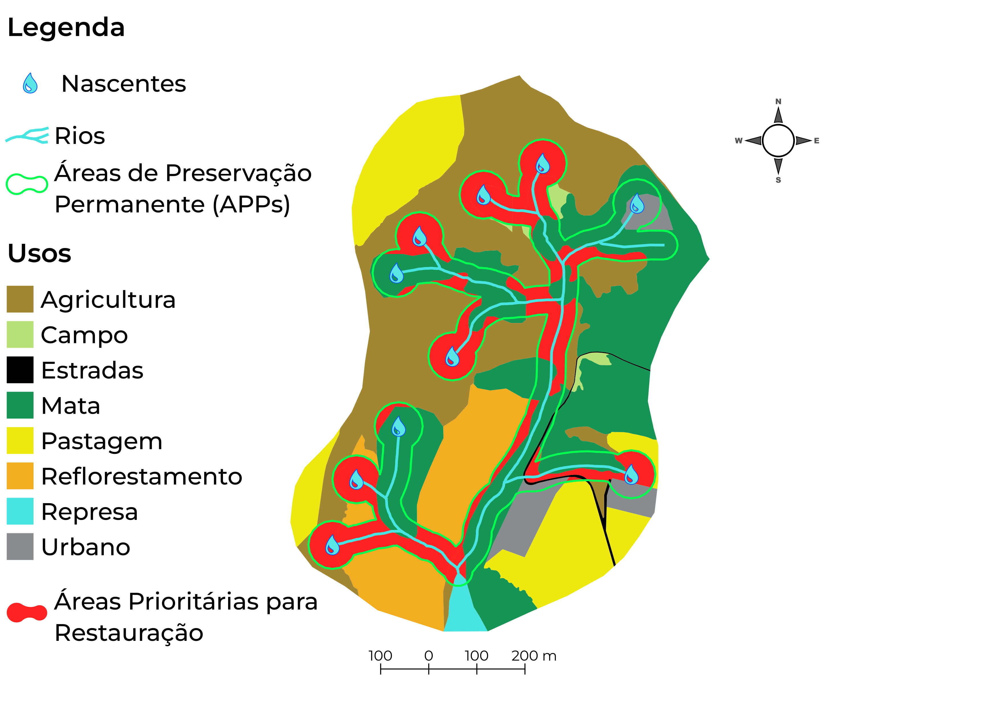

Áreas prioritárias para restauração da vegetação nativa focam em segurança hídrica, biodiversidade e clima. As Áreas de Preservação Permanentes (APPs), áreas próximas aos corpos d'água, são consideradas essenciais, especialmente em mananciais para abastecimento público. O Pagamento por Serviços Ambientais (PSA) remunera produtores rurais por manter ou recuperar essas áreas. Na figura as áreas destacadas em vermelho dentro das APPs (em verde) são consideradas prioritárias para restauração da vegetação nativa, pois apresentam alguma atividade agrícola/econômica quando deveriam estar preservadas.
A presente proposta técnica teve como principal objetivo, desenvolver uma metodologia para classificação e valoração das propriedades rurais para fins de Pagamento de Serviços Ambientais (PSA). Essa classificação baseou-se no mapeamento do uso e ocupação das terras, a distribuição das áreas de mata dentro das APPs, a distribuição das atividades agrícolas e dados de infiltração de água no solo, dentro das diferentes propriedades agrícolas.
O que é necessário fazer?
